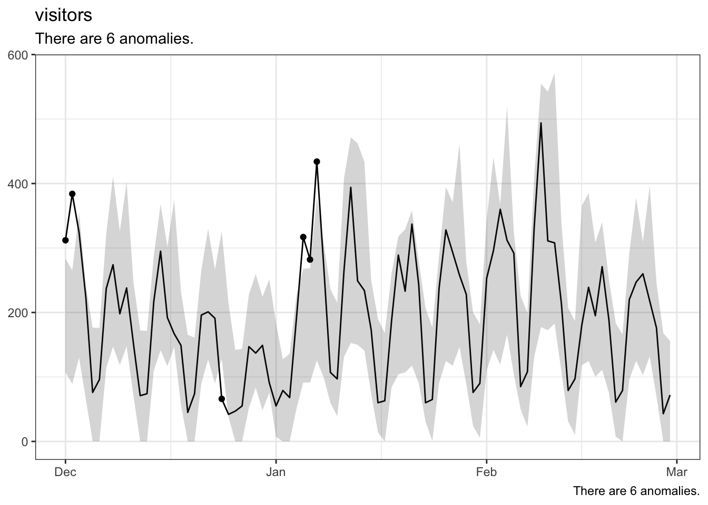

gt::gt(head(aw_anomaly_report(date_range = c("2024-12-01", "2024-12-31"),
metrics = c('visits','visitors'),
rsid = 'lumalucaslidemo'), 10))Anaomaly Detection adobeanalytisr

When I first started working with the new Adobe Analytics API 2.0 I wanted to tap into the powerful anomaly detection that was built into Analysis Workspace. According to Adobe “Anomaly Detection provides a statistical method to determine how a given metric has changed in relation to previous data.”
The hope was always that the Anomaly Detection would allow analysts to separate “true signals” from “noise” but that’s been pretty difficult in the Analysis Workspace UI. It has definitly helped ‘identify potential factors that contributed to those signals or anomalies’ but it has fallen short in actually providing the final solution. That’s because anomalies are complex and require context to prove whether the event can be repeated or should just be explained.
The hope of anomaly detection has always the same. Adobe’s documentation expresses it very well.
…it lets you identify which statistical fluctuations matter and which don’t. You can then identify the root cause of a true anomaly. Furthermore, you can get reliable metric (KPI) forecasts.
Unfortunately the reality is that using this tool of statistical analysis can prove to be a lot of wasted time and effort. With that being said, Adobe’s anomaly detection does provide a very powerful opportunity if used correctly.
The current application of Analysis Workspace’s anomaly detection algorithm includes
- Support for hourly, weekly, and monthly granularity, in addition to the existing daily granularity.
- Awareness of seasonality (such as “Black Friday”) and holidays.
So what does this look like in adobeanalyticsr?
The new adobeanaltyicsr function for anomaly detection, aw_anomaly_report(), is designed to facilitate the principle of “speed to analysis” while fostering better reporting opportunities.
The default function call will return a basic data frame of 7 different columns.
If you request more than one metric it will return a row for each metrica at the granularity level you requested in the function.
For instance, the following function will return this:
aw_anomaly_report(date_range = c("2020-12-01", "2021-03-01"),
metrics = c('visits','visitors'))Notice that each row includes the data, expected, upper bound, and lower bounds calculated for you already. It also includes whether or not the data crossed one of those bounds and was determined to be an anomaly.
For those looking to get to the ‘raw’ data, this should be just what you need to get going. But there are many times that all you are wanting to do is visualize the data or just show the dates that an anomaly was detected. This was my main use case so I created an argument that will help you quickly view the results.
Adding the argument quickView = TRUE to the function call will return a list of 3 items. It will also split these results by the different metrics that were requested, if there are more than 1 in the request.
The following example shows the same function call as above but it includes the quickView = TRUE argument. The list includes:
- Data = The raw data just like in the default function but split up by metric if you have requested more than one.
- Anoms = The filtered view of the data showing only those rows (by metric) where ‘anomalyDetection = TRUE’.
- Viz = A line graph produced using ggplot which includes the error bar, points on the timeline where an anomay was detected, and finally the data shown in a line expanding over the period requested in the date range.
df <- aw_anomaly_report(date_range = c("2020-12-01", "2021-03-01"),
metrics = c('visits','visitors'),
quickView = TRUE,
rsid = 'lumalucaslidemo')
df[[1]]$data
df[[1]]$anom
df[[2]]$data
df[[2]]$anoms
For more on Anomaly Detection in Analysis Workspace check out this video.
I’m always looking for new ways to serve up the anomaly detection data. If you have an idea, make sure to submit an issue for me to work on with you.